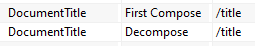
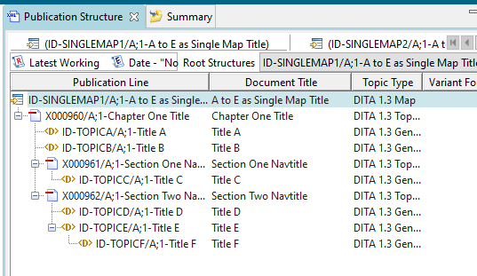

Use the Markup, Stupid!
Why Are We Here?
Product Life Management (PLM)
Bill of Materials and the Product
Topic-based Content
Building Documents from Topics
A (Very Quick) DITA Refresher
Topics
<topic id="topic_fjt_3bt_2tb">
<title>Topic A</title>
<prolog>
<author>Mark Up</author>
</prolog>
<body>
<p>Topic content.</p>
</body>
</topic>
Maps
<map id="id-map-AtoE-nested">
<title>Topicrefs A to E Nested</title>
<topicref
href="topicA.dita"
navtitle="tref A, level 1">
<topicref
href="topicB.dita"
navtitle="tref B, level 2">
<topicref
href="topicD.dita"
navtitle="tref D, level 3"/>
<topicref
href="topicE.dita"
navtitle="tref E, level 3"/>
</topicref>
<topicref
href="topicC.dita"
navtitle="tref C, level 2"/>
</topicref>
</map>
Published Table of Contents

Reuse
<map id="id-map-AB-siblings">
<title>Topicrefs A and B As Siblings</title>
<topicref href="topicA.dita" navtitle="tref A, level 1"/>
<topicref href="topicB.dita" navtitle="tref B, level 1"/>
</map>
Building Blocks
The PLM Product
The Usual CMS Features
- Single-source publishing
- Version management
- Engineering data
- ...
Publication Structure
This is my DITA map, imported
What's there not to like?
This is not XML at all
Getting Rid of the Angled Brackets
Importing:
- Graphics
- Topics
- Maps
Known as decompose
Decompose
(etc)
A Reminder
<topicref href="A.dita">
<topicref href="B.dita"/>
</topicref>
<topicref href="A.dita">
<topicref href="B.dita"/>
<topicref href="C.dita"/>
</topicref>
Building blocks, remember?
Map 1
<map id="id-singlemap1">
<title>A to E as Single Map Title</title>
<topichead navtitle="Chapter One Title">
<topicref href="topicA.dita"/>
<topicref href="topicB.dita"/>
<topichead navtitle="Section One Navtitle">
<topicref href="topicC.dita"/>
</topichead>
<topichead navtitle="Section Two Navtitle">
<topicref href="topicD.dita"/>
<topicref href="topicE.dita"/>
</topichead>
</topichead>
</map>
Note topic E, last
Map 1 Imported
Map 2
<map id="id-singlemap2">
<title>A to E as Single Map Title</title>
<topichead navtitle="Chapter One Title">
<topicref href="topicA.dita"/>
<topicref href="topicB.dita"/>
<topichead navtitle="Section One Navtitle">
<topicref href="topicC.dita"/>
</topichead>
<topichead navtitle="Section Two Navtitle">
<topicref href="topicD.dita"/>
<topicref href="topicE.dita">
<topicref href="topicF.dita"/>
</topicref>
</topichead>
</topichead>
</map>
Topic E now nests topic F
Map 2 Imported
But Look At Map 1 Now
|
Before |
After |
|---|---|
|  |
Inheritance? Really??
What's Wrong with This Picture?
- Map XML tree to non-XML (incompatible) model
- Mapping language
- Not very powerful
- Syntax leads to misunderstandings
- Must be used for every decompose/compose
- XML hampered by non-XML limitations
It's Not the First
FrameMaer+SGML, anyone?
WordPerfect SGML
MS Word plugins for SGML, XML
(etc)